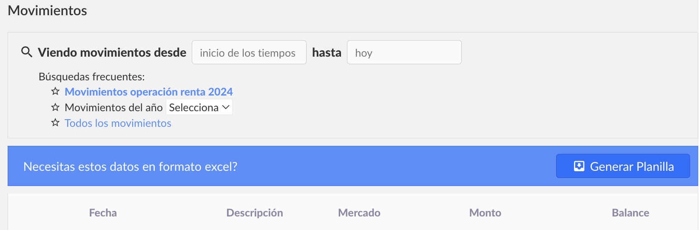
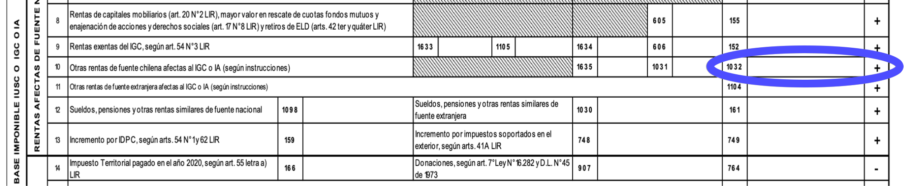

Sabemos que el tema de los impuestos es algo que preocupa y complica a muchos de nuestros usuarios, y no es para menos… es por eso que hemos creado esta guía tributaria para poder ayudarlos de manera lo más sencilla y completa posible. Aquí encontrarás respuesta a preguntas como: cuándo se debe declarar, cómo hacer la declaración en el SII, cómo hacer el cálculo de mis ganancias, entre otras preguntas frecuentes. Incluso presentaremos y explicaremos el nuevo "Reporte de Ganancias/Pérdidas" que está disponible en nuestra web para ayudar a nuestros usuarios en el proceso de informar sus ingresos.
Esta guía no es una asesoría tributaria, pero esperamos que te ayude a entender un poco mejor cómo enfrentar el tema.
Contenido
Cada año, en abril, se realiza la Operación Renta en Chile. En ese proceso, las personas y empresas (esto es: personas naturales o jurídicas domiciliadas o residentes en Chile) deben declarar sus ingresos del año anterior. Luego, el SII revisa tu declaración, ve en qué escalafón quedas, si calificas para algún beneficio tributario, si tienes APV, etc. y finalmente determina si aún debes pagar impuestos o si te deben devolver plata.
Pero entonces, ¿debo declarar algún ingreso relacionado a mis criptomonedas? La respuesta corta es: sí, pero sólo si obtuviste ganancias como resultado de una o más ventas (enajenación) de criptomonedas.
Esto quiere decir que NO debes declarar si:
En otras palabras, lo que el SII necesita saber, es cuánta plata ganaste por concepto de operaciones de venta de criptoactivos durante el año anterior. Y aquí aparece la gran pregunta…
Esta es una pregunta nada fácil de responder, de hecho, hay varias formas de responderla… por algo existen expertos en asesoría tributaria que pueden ayudarte a hacer el cálculo en caso de que éste se vuelva demasiado complejo. Y es probable que se vuelva complejo, sobre todo si tienes demasiadas operaciones con criptomonedas.
El resultado que obtienes de una venta de criptomonedas corresponde a lo que ganas (o pierdes) por efectos de "mayor o menor valor", es decir, por la diferencia entre el precio de la venta y el precio de adquisición de lo que vendiste. Pero, ¿cuál es el precio de adquisición de lo que vendí? Esa es la verdadera pregunta, y para responderla, pongamos la siguiente analogía:
Imagina que tu billetera de Bitcoin (o cualquier cripto) es como una piscina. Cada vez que entra Bitcoin en tu billetera (por una compra o por un abono), es como si echaras un balde de agua a esa piscina. El problema es que cada balde lo compraste a un precio distinto, y toda el agua se mezcla, entonces, cuando decides sacar un balde para venderlo, no sabes exactamente cuál estás sacando.
Entonces, cuando vendes, ¿a qué precio compraste el Bitcoin que estás vendiendo?
Como no podemos distinguir físicamente qué Bitcoin específico salió (porque cada cuenta contable funciona como una billetera con saldo total, no como una lista de lotes separados por precio), lo que se hace es definir una forma de ordenarlo. Es una convención contable para valorizar un inventario y existen distintos métodos para hacerlo.
La ley permite los siguientes métodos para valorizar inventarios. Se puede elegir cualquier método, pero la ley exige mantenerlo por al menos 5 años.
First In, First Out: lo primero que entra al inventario es lo primero que se vende. Es decir, se vende de lo más antiguo a lo más nuevo.
Método usado por Buda.comLast In, First Out: lo último que entra es lo primero que se vende. Es decir, se vende de lo más nuevo a lo más antiguo.
Se calcula un precio promedio ponderado de todas tus compras hasta el momento de la venta. No es aceptado por el SII para personas naturales, sólo para empresas.
Solo empresasIncluso se puede "elegir" en cada venta qué criptos vendiste, siempre con el cuidado de no vender dos veces lo mismo. Eso sí, es mucho más complicado de explicar y sólo sirve para personas naturales.
Cada método puede dar resultados distintos en el cálculo de la ganancia.
¿Suena complejo?…
Este año (2026) hemos lanzado un proyecto piloto el cual consiste en darle a nuestros usuarios la posibilidad de descargar, desde la sección Historial de su cuenta, un documento en PDF que contiene un "Reporte de Ganancias/Pérdidas". En éste se detallan las ventas que se hicieron durante el año anterior y cuál fue la ganancia (o pérdida) obtenida en cada una.
Para los cálculos, decidimos usar la metodología FIFO, debido a que es una metodología ampliamente usada, más fácil de explicar en comparación con las otras y puede ser usada por cualquier tipo de contribuyente.
Volviendo al ejemplo de la piscina: Si el primer balde de 1 litro que echaste costó $300 y el segundo costó $500, y luego vendes 1,5 litros, el método FIFO asume que 1 litro corresponde al balde de $300 y 0,5 al balde de $500. Por lo tanto, si vendiste los 1,5 lts a $600, la ganancia se calcula como: 600 - (1×300 + 0,5×500) = $600 - $550 = $50.
Es decir, las ventas van "consumiendo" las compras desde las más antiguas a las más nuevas. Con ese orden podemos calcular de manera consistente tus ganancias o pérdidas.
Algo importante a aclarar, es que el cálculo del FIFO en el documento, y el hecho de que una venta "consuma" los BTCs de ciertas compras, no es algo que suceda "realmente" (es decir, NO es que contablemente se consuman exactamente esos BTC), sino que el reporte es sólo una de las formas de calcular las ganancias del usuario, tú podrías elegir otra si te acomoda.
En resumen, el algoritmo que se ejecuta para poder generar el reporte consiste en lo siguiente:
Además:
Si necesitas saber en detalle cómo se hace la valorización de las operaciones para obtener los precios de adquisición, en el reporte encontrarás la explicación completa de la lógica utilizada para cada tipo de transacción.
Las comisiones cobradas por la plataforma constituyen un costo asociado a la operación, pero no forman parte del precio de adquisición ni reducen el valor de enajenación para efectos del cálculo informado en el documento. Esto quiere decir que:
Objetivos es un producto de Buda.com que permite separar saldos y ordenar tus criptos según distintos propósitos. Por eso, comprar criptos a través de Objetivos equivale a tener una "piscina" separada de la Billetera.
Eso significa que:
Cuando generas tu reporte de ganancias, aplicamos el método FIFO por separado dentro de cada una de estas "piscinas", siempre diferenciando por moneda.
En el documento encontrarás la siguiente información:
El documento se enviará al email registrado en tu cuenta para que puedas descargarlo en formato PDF y revisarlo.
Es tu responsabilidad verificar que los cálculos estén correctos y que lo reportado calce 100% con la realidad, y si no, rectificar el número final. Por ejemplo, si vendiste criptos que obtuviste en otra plataforma, nosotros no tenemos cómo saber a qué precio las adquiriste, por lo que no tendríamos toda la información y lo reportado no sería 100% veraz. En ese caso tú tendrías que re hacer el cálculo con los precios de adquisición correctos.
Si tú eres uno de estos casos donde hay operaciones fuera de Buda, has hecho abonos desde otras plataformas, o si tu volumen de operaciones es muy alto y requiere un procesamiento más avanzado, lo más seguro es que el Reporte de Ganancias/Pérdidas no te sirva. En esa situación, te recomendamos utilizar una herramienta externa especializada. Nosotros confiamos en Ledgifi, puedes saber más información en: https://ledgifi.com/chile
Si quieres hacer el cálculo de las ganancias usando otro método o simplemente quieres corroborar que el Reporte de Ganancias/Pérdidas esté 100% correcto, puedes descargar todos tus movimientos de la siguiente manera:

Botón "Generar Planilla" dentro de la sección Movimientos
Siguiendo estos pasos, podrás tener a mano todos tus movimientos de criptomonedas para poder hacer tú mismo el cálculo.
En abril de cada año, tendrás que ingresar el monto calculado de tu ganancia en el formulario F22, el mismo en donde declaras tus impuestos anuales ante el SII. Debes poner el monto que calculaste (ya sea usando el Reporte de Ganancias generado en Buda o con otro método, y agregando los ingresos generados en otras plataformas si aplica) en la casilla 1032 de la sección "Base Imponible IUSC o IGC o IA", sub-sección "Tipos de rentas y rebajas".

Casilla 1032 en el formulario F22 del SII — sección "Tipos de rentas y rebajas"
Simula tus movimientos de compra y venta de Bitcoin y compara cómo cambia tu ganancia tributaria según el método elegido. La tabla es editable: modifica los valores o agrega tus propias operaciones.
| # | Tipo | Fecha | Cantidad (BTC) | Precio / BTC (CLP) | Total (CLP) |
|---|
| Tipo | Fecha | Cantidad (BTC) | Precio venta / BTC | Costo adquisición | Ganancia / Pérdida |
|---|
Entonces no hay ganancia y no debes declarar nada.
Lo que hay que descubrir acá es cuándo se produce un equivalente a una venta o enajenación.
Cabe volver a mencionar que nosotros no sabemos si, por ejemplo, un retiro cripto que hiciste desde Buda fue para pagar algo, por lo que es tu responsabilidad como contribuyente hacer el cálculo de cuánto ganaste al pagar con esas cripto.
Debes hacer lo mismo que con Buda, es tu obligación declarar las ganancias, independiente de donde realizaste las compras o ventas.
Se tratan como cualquier otra criptomoneda.
Si la empresa está usando FIFO para calcular sus ganancias por efectos de compraventa de criptomonedas, le podría servir esta guía y el Reporte de Ganancias. Aunque las reglas son un poco distintas, por lo que es mejor que lo veas bien con tu contador.
Como empresa constituida en Chile y debido a nuestro giro, estamos obligados a enviar anualmente al SII una Declaración Jurada, la cual contiene el detalle de las compras, ventas, depósitos y retiros de criptomonedas realizadas en el Exchange por nuestros clientes. Esta es una obligación común para todos los exchanges, como Buda.com, que operan en Chile.
Sin embargo, esto no quiere decir que en Chile declaramos las ganancias por ti. En la DJ no se incluyen cálculos de ganancias de ningún tipo, sólo montos en cripto y su equivalente en CLP al momento de las operaciones.
En ciertas ocasiones, el SII con la información que le envían las distintas instituciones, puede autocompletar algunas partes de la declaración. Sin embargo, la declaración es responsabilidad final de cada persona. Por lo tanto, tú mismo debes revisarla bien antes de aceptarla y enviarla.
La utilidad final del año tributario es el resultado de la suma de las utilidades de todas tus ventas durante el mismo. Algunas podrán tener pérdida y otras ganancias, por lo que se sumarán y restarán hasta llegar a un resultado final.
En el caso de pérdidas obtenidas por la compra/venta de criptomonedas por parte de una persona, estas se pueden compensar con ganancias del año por otras operaciones de capitales mobiliarios y ganancias de capital.
Si el resultado final es negativo, quiere decir que en total, no tuviste ganancias en el año reportado.
Recuerda que la obligación de declarar es tuya como contribuyente, por lo que si no declaras puedes tener problemas con el SII en caso de que tu declaración de renta sea fiscalizada y verte expuesto a multas.
La renta derivada de la venta de criptomonedas se entiende percibida cuando es puesta a disposición a través de cuentas virtuales proporcionadas por los intermediarios de este tipo de activos digitales. Por lo tanto, desde que realizas la venta y tu plata queda disponible en Buda.com, debes calcular el mayor valor para efectos de calcular los impuestos.
Un activo digital o virtual, según el Oficio Ord. Nº963 del 14 de mayo de 2018 del SII.
Al cálculo de la ganancia debemos incluir el efecto del IPC para que quede un valor completamente preciso. Para esto, debemos tomar en cuenta 2 períodos: (1) el período entre la compra y la venta y (2) el período entre la venta y fin del año.
Para el período entre la compra y la venta, por regla general, se toma en cuenta la variación del IPC desde el mes anterior a la compra hasta el mes anterior a la venta. Por ejemplo, si se compró en marzo y luego vendiste en octubre del mismo año, entonces se debe considerar la variación del IPC desde febrero hasta septiembre.
Luego, se debe reajustar la ganancia resultante considerando el período desde el mes de la venta hasta diciembre del año reportado.
Todo esto se consideró en el Reporte de Ganancias/Pérdidas.
Respecto de las personas naturales que no están obligadas a determinar su renta efectiva según contabilidad completa, no pueden deducir las comisiones pagadas como parte del precio de compra al momento de la enajenación para efectos de la determinación del mayor valor. De hecho, así se consideran las comisiones en el Reporte de Ganancias/Pérdidas: no forman parte del precio de adquisición ni reducen el valor de enajenación.
Para el caso de las empresas es diferente, pudiendo rebajar estos costos por comisión de sus ganancias.
No, la venta de criptomonedas o activos virtuales o digitales no se encuentra afecta a IVA.
Accede a tu cuenta en Buda.com y descarga tu Reporte de Ganancias/Pérdidas desde la sección Historial.
Ir a Buda.com